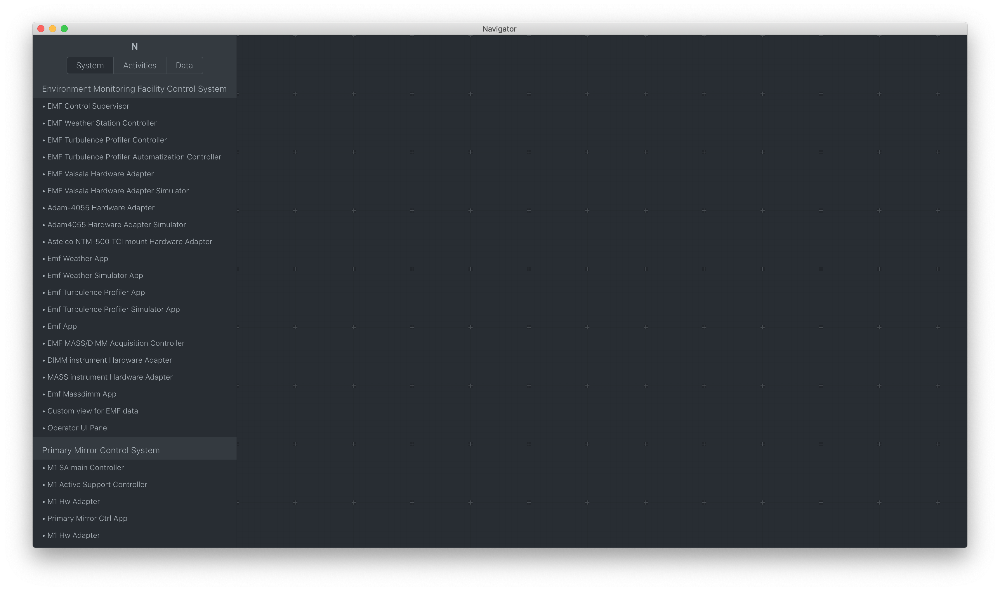
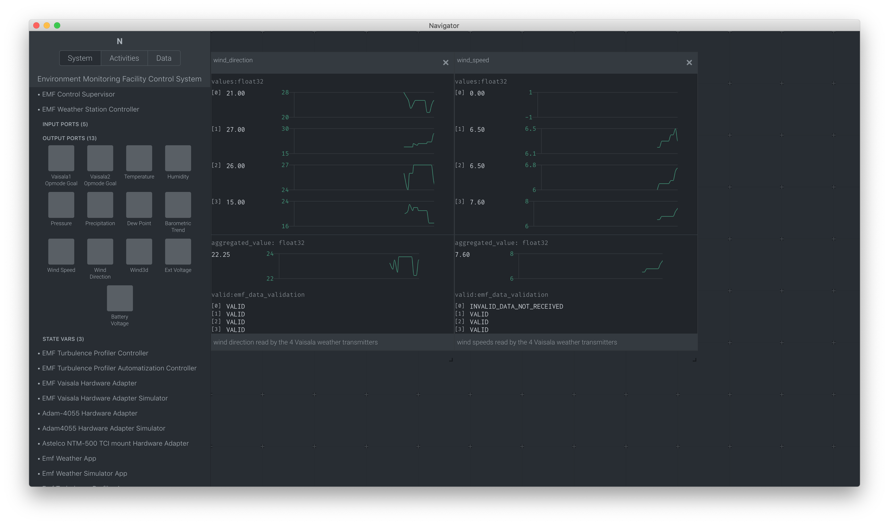

13. UI Framework¶
Note
The UI framework is currently only supported on MacOS. Linux support will be available in future releases.
The UI Framework introduces a set of libraries and a windowed application that provides a GUI for the OCS. The framework handles three primary concerns
- Rendering (drawing) elements to the screen (DOM)
- Library of re-usable UI components that can be shared across the project
- An Engineering App that provides an interface to the OCS
13.1. Installation¶
Download the Mac App
You can unzip the app anywhere on your MacOS file system. Double click on the icon to run.
13.2. Engineering App¶
The engineering application provides a GUI to the OCS model. It is a downloadble Mac app that you can run after installing the SDK on your Mac.
The UI engineering app uses your local bundles from $GMT_LOCAL/etc/bundles and allows you to see a visual representation of your model files’ input/output ports. For now, the Engineering app runs in MacOS.
To launch the application, double click on the app icon.
13.3. Configuration¶
The User Interface needs to be configured to connect to the correct control components to receive data. Without proper configuration, the application may look like this:
Edit the appropriate config files in the src/etc/conf folder to point to the correct IP address for input and output ports. For example,
$ cd $GMT_LOCAL/modules/ocs_hdk_dcs/src/etc/conf/hdk_ctrl_pkg/hdk_main_ctrl/
$ sed -i '' "s/127.0.0.1/172.16.10.31/g" hdk_main_ctrl_config.coffee
See the Troubleshooting section below for more help with connection issues.
Restart the Navigator application for changes to take affect.
13.4. User Guide¶
The navigator application contains two regions.
- Navigation This area contains the navigation tree. The tree is a representation of your model and is built from information found in your local bundles.
- Context Items selected in the tree will display here. Currently, it will display a representation of your model’s input/output ports and state variables.
Note
The Context area will optimistically render your model. Not all model data can be currently rendered. Some items like properties and detailed port views are currently not supported.
13.5. Launching Custom Panels¶
From the menu, select Vis package and select Panel loader. This will launch a panel allowing you to select a custom vis package.
13.6. Troubleshooting Guide¶
The engineering app loads the local bundles defined in $GMT_LOCAL/etc/bundles. It currently uses the model generated config files to read data for your package. Those config files are created in $GMT_LOCAL/modules/<your_module>/src/etc/conf/<your_package>_pkg/<component>_config.coffee; it’s useful to see what’s in those configs when troubleshooting data availability issues. The availability of data to the UI largely depends on those config files. The values generated will depend on how you write your model, but a sample of a config file might look like
module.exports = properties: uri: { name: 'uri', default_value: 'gmt://hdk_dcs/hdk_main_ctrl/hdk_main_ctrl' , type: 'String', desc: 'Uri path for the component' } # other fields ommited state_vars: hmi: { name: 'hmi', } motor: { name: 'motor', } input_ports: hmi_goal: { name: 'hmi_goal', protocol: 'pull', url: 'tcp://127.0.0.1:8116', blocking_mode: 'async', max_rate: 1000, nom_rate: 1 } motor_goal: { name: 'motor_goal', protocol: 'pull', url: 'tcp://172.16.10.31:8117', blocking_mode: 'async', max_rate: 1000, nom_rate: 1 } output_ports: hmi_value: { name: 'hmi_value', protocol: 'pub', url: 'tcp://127.0.0.1:8122', blocking_mode: 'async', max_rate: 1000, nom_rate: 1 } motor_value: { name: 'motor_value', protocol: 'pub', url: 'tcp://172.16.10.31:8123', blocking_mode: 'async', max_rate: 1000, nom_rate: 1 }
When troubleshooting it’s important to note the protocol and the url keys for a given port. For example the hmi_value.url value is tcp://127.0.0.1:8122 this means you’re trying to connect to port number 8122 on the address 127.0.0.1 (which is typically your local machine). Whereas the motor_value.url is trying to connect to a different computer with an IP address 172.16.10.31 on port number 8123.
If the computer at 172.16.10.31 is firewalled and not allowing connections to port 8123, you will not be able to see data. You will need to allow incoming connections to that port. Likewise, if your component is running at the computer at 172.16.10.31 and you are trying to read data from 127.0.0.1, you will not see any data. You will need to change the IP to match the computer where your component is running.
Additionally, the UI can only read data from ports configured with the pub protocol.
If you make changes to the config file, you will need to restart the command line app; you can do this by pressing CTRL + C.
Incorrect NODE_MODULE_VERSION: In some cases, the
$GMT_GLOBAL/node_moduleswill take precedent over the ones used by the App. In this case, rename the$GMT_GLOBAL/node_modulesto something like$GMT_GLOBAL/node_modules.bak.Unresponsive UI: in some case if the UI becomes unresponsive, press
CMD+Rto refresh. If that fails to solve the problem, restart the CLI app. You can stop the CLI app withCTRL+C.No navigation tree: the navigation tree is rendered off the local bundles in
$GMT_LOCAL\etc\bundles. The bundles described there need to have been built with webpack.No data: Ensure that the ports used by the controllers to publish data are accessible through the firewall. The following command should be used on the Device Control Computer to open the applicable range of ports (8122 - 8124):
$ sudo firewall-cmd --add-port=8122-8124/tcp